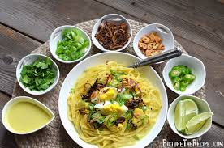

Khao Suey

Recipe
Khao Suey is a delicious and aromatic dish originating from Burma, which has gained popularity in South Asia, especially in Pakistan. It consists of a rich and creamy coconut-based chicken curry served over a bed of egg noodles. The dish is known for its vibrant flavors, combining the richness of coconut milk with the warmth of curry spices and the freshness of various garnishes.
The beauty of Khao Suey lies in its customizable garnishes, allowing each person to tailor their bowl to their taste. Common garnishes include crispy fried onions, fresh coriander, sliced green onions, red chilies, crushed peanuts, and lime wedges. This combination of textures and flavors creates a satisfying and wholesome meal that is both comforting and exciting. Whether enjoyed as a hearty family dinner or a special dish for guests, Khao Suey is sure to impress with its complex and delightful taste
Ingredients
For the Curry:
- 500g chicken, cut into small pieces
- 1 onion, finely chopped
- 3 cloves garlic, minced
- 1 tablespoon ginger, minced
- 2 tablespoons curry powder
- 1 teaspoon turmeric powder
- 400ml coconut milk
- 2 cups chicken broth
- 1 tablespoon soy sauce
- Salt and pepper to taste
For the Noodles:
- 500g egg noodles or spaghetti
For the Garnishes:
- 1 cup crispy fried onions
- 1 cup chopped fresh coriander
- 1 cup sliced green onions
- 1/2 cup sliced red chilies
- 1/2 cup crushed peanuts
- 2 limes, cut into wedges
Steps
- Prepare the Curry
- Heat some oil in a large pot over medium heat. Add the chopped onions and sauté until golden brown.
- Add the minced garlic and ginger, and sauté for another minute.
- Add the curry powder and turmeric powder, and cook for another minute until fragrant.
- Add the chicken pieces, and cook until they are browned on all sides.
- Pour in the coconut milk, chicken broth, and soy sauce. Stir well and bring to a boil.
- Reduce the heat and let it simmer for about 20-25 minutes, or until the chicken is fully cooked and the sauce has thickened.
- Season with salt and pepper to taste.
- Prepare the Noodles:
- Cook the egg noodles or spaghetti according to the package instructions. Drain and set aside.
- Assemble the Dish:
- In a bowl, place a serving of cooked noodles.
- Pour the chicken curry over the noodles.
- Garnish with crispy fried onions, fresh coriander, green onions, sliced red chilies, crushed peanuts, and lime wedges.
- Serve:
- Serve immediately while hot, allowing each person to mix in their preferred garnishes